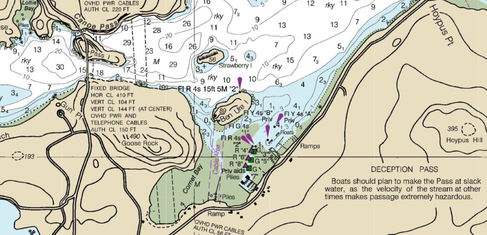

Deception Pass Marina
Need Moorage?
Located near the San Juan Islands, and within the heart of Deception Pass State Park.
We are a locally owned private marina, founded in (year) by (names of founder(s)). Current owner(s) are/is (name(s)). Theres bound to be something for you, from fishing and crabbing, to beach combing, hiking, and more.
ACCESS AND NAVIGATION
When entering the marina, please take note of no-wake signs and water depths. Larger yachts should enter and depart in deep water area and watch the tidal charts. For an in-depth scaleable map of water depth for Deception Pass Marina and the surrounding area, visit The Nations's Chartmaker.
SLIP INFORMATION
There are a total of 64 slips 20' to 70' with a large breakwater, an easily accessable fuel pier, and shore power for each slip up to 120 volts. Both crabbing and fishing are allowed off our docks as well.
CANCELLATION POLICY
NO REFUNDS – boat slip fees are charged at time of booking, and are non-refundable. Should you need to cancel, you will be credited for up to one year from your initial reservation date.
MARINA HOURS:
- Mon - Thu: 6:00am - 6:00pm
- Friday: 6:00am - 4:00pm
- Saturday: 8:00am - 6:00pm
- Sunday: Closed
We are a locally owned private marina, founded in (year) by (names of founder(s)). Current owner(s) are/is (name(s)).
On the North side of Whidbey Island located near Cornet Bay and Deception Pass, the 64-slip Deception Pass Marina is a gathering point for boaters to restock, refuel and relax. With hundreds of acres of Deception Pass State park surrounding the Marina, theres no shortage of activities.
A comfortable, safe place to moor, the marina docks rise and fall with the tide, and offer water and power hookups, and good lighting. Guests have access to all waterside amenities, including the convenience store, picnic tables, bonfite pit, and restroom facilities.
SLIP INFORMATION
There are a total of 64 slips available, available in fully covered, partially covered, and uncovered variants. We offer 20' to 70' slips with a large breakwater, an easily accessable fuel pier, and shore power for each slip up to 120 volts.
Specific slips also offer dock boxes for dry storage of your ropes or crabbing gear. With proper licenses, both crabbing and fishing are allowed off our docks as well.
ACCESS AND NAVIGATION
Deception Pass Marina lies at the edge of the San Juan Islands, and acts as a great stopping access point for those traveling through Deception Pass.
Waters through the pass can exceed 9 knots. The currents create massive whirlpools and eddies that can easily alter the course of heavy displacement vessels. Standing waves can reach 8 to 10 feet under maximum current, and when they’re coupled with an opposing wind and/or storm surge. Tugboats with a cargo tow, and low-powered sailboats, avoid the pass except at the hand of an expert captain and in the small window of slack tide.
When entering the marina, please take note of no-wake signs and water depths. Larger yachts should enter and depart in deep water area and watch the tidal charts. For a more in-depth scaleable map for Deception Pass Marina and the surrounding area, visit The Nations's Chartmaker.
PET RULES
We are a pet friendly marina!
- Pets must be leashed while on docks and near common areas
- Guests are responsible for any loss or damage done to marina property by a pet
- Do not leave a barking dog unattended on your boat
- Please help us keep our dock clean by picking up after your pet
CANCELLATION POLICY
NO REFUNDS – boat slip fees are charged at time of booking, and are non-refundable. Should you need to cancel, you will be credited for up to one year from your initial reservation date.